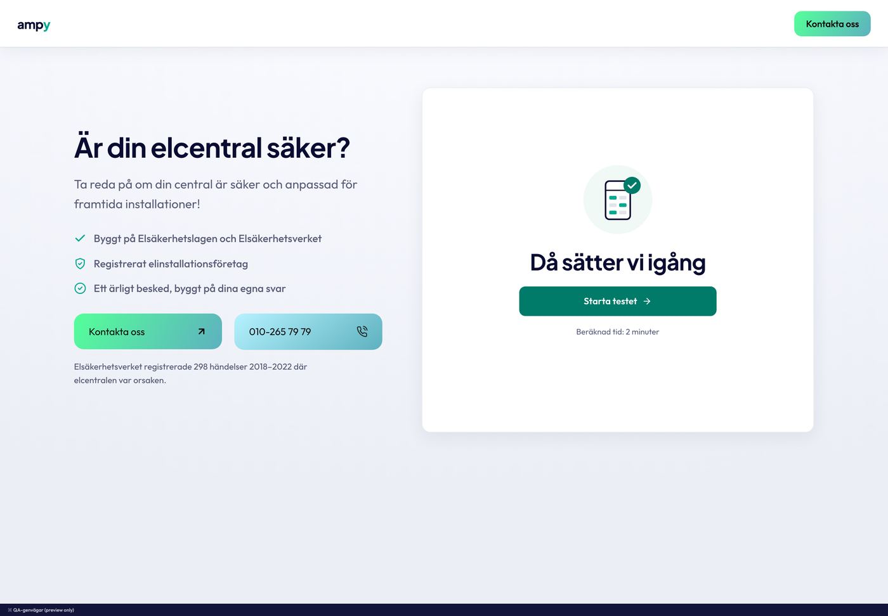
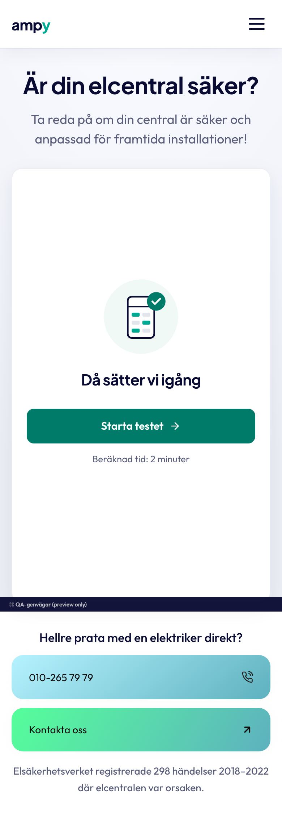
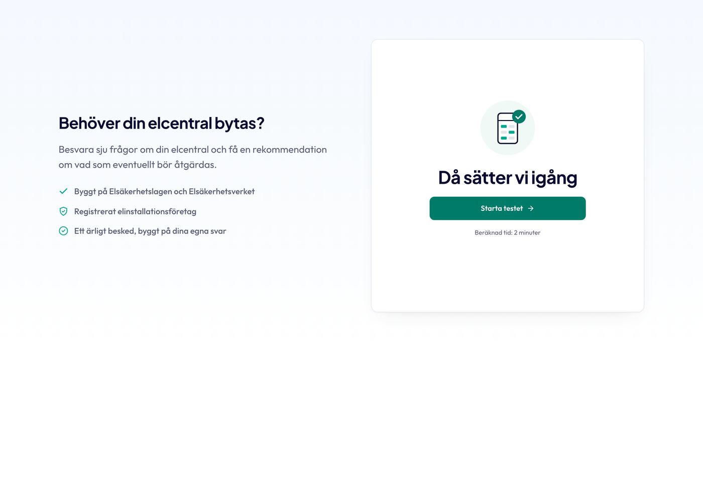
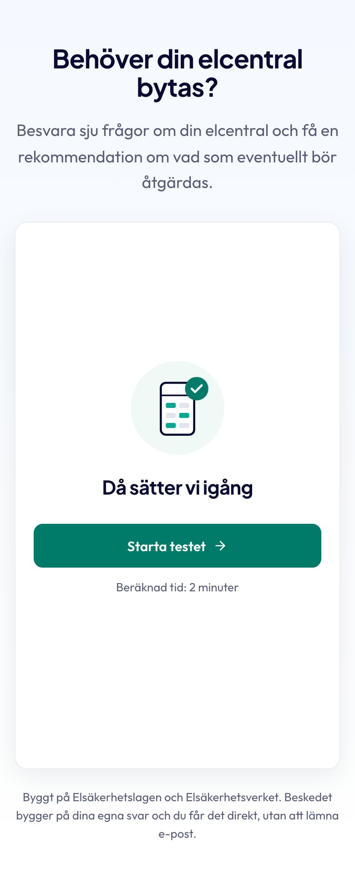

Diagnostik-kitet
Rail plus stage: varumärkeskolumnen till vänster, det vita frågekortet till höger. Kunden svarar med tap-chips och får ett besked i ord, aldrig bara i färg. Kanon är Elcentral-kollen (dualstatus-matrisen) och Elkollen (trafikljus-boarden), båda auktoritet 1. Klassen är .ampy-diag.
- Rail och stage
- Frågekortet
- Besked: dualstatus
- Besked: trafikljus
- Fynd, dela, sticky, no-JS
- Blockläge
- Paritet
- Avvikelser och drift
.ampy-chips / .ampy-chip (falt.css, radio-chips med kanon elcentral-kollen), pills är .ampy-tag (text.css), knapparna .ampy-btn (knappar.css), trust-listan .ampy-list--check, källraden .ampy-source. Kitet självt (diagnostik.css) äger skalet, railen, kortet, crumb och förlopp, frågetiteln, info-rutan, dualstatus-zonen, fynd, akut, factnote, trafikljus-boarden med tabbar och rader, dela, sticky-CTA, blockläget och no-JS-noten.Rail och stage: startvyn
Skalet är en 1280-container med två kolumner 44fr / 56fr och gap 64 från 992 px containerbredd. Railen (H1, lead, tre trust-bullets, två gradient-CTA:er i samma rad, statistikrad) centreras i en 560-box så att den aldrig hoppar mellan steg. Kortet har samma minsta höjd på start och frågor. På mobil packas railen upp: H1, lead, KORTET, "Hellre prata med en elektriker direkt?", telefon först, kontakt, statistik.
Kanon: elcentral-kollen (assets/elcentralkollen.css:160-292, "1:1 med Elkollen hero__copy"). Finns även i: elkollen (preview/hero.html: 1180-wrap, H1 40/600 med teal sista rad, 96 px toppspacer). Blockbiblioteket: Elcentral-kollen, Elkollen.
Är din elcentral säker?
Ta reda på om din central är säker och anpassad för framtida installationer.
- Byggt på Elsäkerhetslagen och Elsäkerhetsverket
- Registrerat elinstallationsföretag
- Ett ärligt besked, byggt på dina egna svar
Hellre prata med en elektriker direkt?
Elsäkerhetsverket registrerade 298 händelser 2018 till 2022 där elcentralen var orsaken.
Då sätter vi igång
Beräknad tid: 2 minuter


Anatomi
| Del | 1440 | 390 | Källa / token |
|---|---|---|---|
| Shell | 1280, padding 56 / 39,6, grid 44fr / 56fr, gap 64 | padding 27,3 / 21,5, en kolumn, gap 14 | --ampy-container, --ampy-space-xl, --ampy-gutter; gap 64 kit-egen (källan, tokens xl 56 / 2xl 79) |
| Rail | min-höjd 560, innehållet centrerat | display: contents, ordnad runt kortet | kit-egen --_minh (elcentral --ec-q-minh) |
| H1 | 48 / 700 / lh 1.07 | 31,3 | --ampy-text-h1 (källan PJS 700 44 / 32) |
| Lead | 22 / 400 / 1.58, max 46ch | 17 | --ampy-text-lead, --ampy-measure-lead (källan 20 / 18 lh 1.6: B18) |
| Trust-bullets | 18 / 500 dämpad, ikon 20 teal, rad-gap 19,8 | dolda | .ampy-list--check (källan 17/500, gap 16) |
| CTA-rad | två .ampy-btn 58 höga, radie 16, flex 1, gap 19,8 | staplade, 60 höga (padding 22), telefon först | .ampy-btn--block + --ring (källan 58 / 60, gap 20 / 12) |
| Statistikrad | 16 / 400 dämpad, max 46ch | 14,1 centrerad | --ampy-text-small (källan 14/450) |
| Startkortet | radie 20, padding 28, 1 px kant, shadow-card, min-höjd 560 | radie 16,3, padding 16,9, min-höjd 600 | .ampy-diag__card (källan radie 14, padding 32 / 20, 0 8px 28px .07) |
| Illustration / rubrik / CTA | 120, h2 36/700, knapp 320 × 48 | 110, 26,8, 316 × 48 | kit-egen --_illu, --ampy-text-h2, .ampy-btn--secondary --compact |
<div class="ampy-diag">
<div class="ampy-diag__inner">
<div class="ampy-diag__rail">
<h2 class="ampy-diag__rail-title">Är din elcentral säker?</h2>
<p class="ampy-diag__rail-lead">Ta reda på om din central är säker och anpassad för framtida installationer.</p>
<ul class="ampy-list ampy-list--check">
<li><svg width="20" height="20" aria-hidden="true"><use href="…/ikoner.svg#ik-check"/></svg><span>Byggt på Elsäkerhetslagen och Elsäkerhetsverket</span></li>
…
</ul>
<p class="ampy-diag__rail-ask">Hellre prata med en elektriker direkt?</p>
<div class="ampy-diag__rail-actions">
<a class="ampy-btn ampy-btn--block" href="/kontakt/">Kontakta oss <svg class="ampy-btn__icon" …>…</svg></a>
<a class="ampy-btn ampy-btn--ring ampy-btn--block ampy-link--tel" href="tel:+4610265797979"><span class="ampy-btn__chip">…</span><span>010-265 79 79</span></a>
</div>
<p class="ampy-diag__rail-stat">Elsäkerhetsverket registrerade 298 händelser 2018 till 2022 där elcentralen var orsaken.</p>
</div>
<div class="ampy-diag__stage">
<section class="ampy-diag__card ampy-diag__card--start" aria-label="Start">
<div class="ampy-diag__start-illu" aria-hidden="true"><svg class="" width="48" height="48" viewBox="0 0 24 24" fill="none" stroke="currentColor" stroke-width="1.75" stroke-linecap="round" stroke-linejoin="round" aria-hidden="true"><rect x="5" y="3" width="14" height="18" rx="2"/><path d="M8 8h3M13 8h3M8 12h3M13 12h3M8 16h3"/></svg></div>
<h3 class="ampy-diag__start-title">Då sätter vi igång</h3>
<button type="button" class="ampy-btn ampy-btn--secondary ampy-btn--compact ampy-diag__start-cta">Starta testet <svg class="ampy-btn__icon" width="16" height="16" aria-hidden="true"><use href="../../system/ikoner.svg#ik-arrow-right"/></svg></button>
<p class="ampy-diag__start-time">Beräknad tid: 2 minuter</p>
</section>
</div>
</div>
</div>- Railens innehåll står stilla: fast 560-box, kortet håller samma höjd på alla frågesteg.
- Kontaktblocket syns på varje vy (anti-lock-in): kunden kan alltid ringa i stället.
- Två lika breda knappar med etikett vänster och ikon höger, telefonen först på mobil.
- Inga faktapåståenden i statistikraden utan källa (candour-grinden; siffran 298 bär länk till Elsäkerhetsverket i källan).
- Ingen tredje CTA-stil i railen: gradient för sidans konvertering, solid teal-deep inne i kortet (B6).
- Ingen rail utan H1 på mobil: rubriken förblir sidans enda H1 i tillgänglighetsträdet.
Frågekortet: en fråga i taget
Crumb med sju förloppsprickar (18 × 4, aktiv 28) och "Tillbaka", frågetitel i kortrubrikens storlek, svarsalternativ som fullbredds-chips (singelval avancerar direkt, flerval får en check-ruta och "Fortsätt"), och en info-ruta med blå i-ikon. Stegbyten glider ±10 px.
Kanon: elcentral-kollen (elcentralkollen.css:344-399, 856-862). Finns även i: elkollen (rumstiles 112 × 2 kolumner, jobblista 52 px, options 72/64 med pil), energycalc (heat-picker-kort 88 px med ikonruta + tänd check, "Vet inte" dashed).
Är din elcentral säker?
Ta reda på om din central är säker och anpassad för framtida installationer.
- Byggt på Elsäkerhetslagen och Elsäkerhetsverket
- Registrerat elinstallationsföretag
- Ett ärligt besked, byggt på dina egna svar
Hellre prata med en elektriker direkt?
Elsäkerhetsverket registrerade 298 händelser 2018 till 2022 där elcentralen var orsaken.
Hur gammalt är huset eller lägenheten?
Byggåret säger ofta en hel del om hur gammal elen är. Ungefärligt räcker.
Känner du igen något av det här hemma?
Välj alla som stämmer.
Värme och missfärgning är klassiska tecken på glappkontakt, en lös anslutning som hettar upp. Inget av detta? Det är ett bra svar.
Anatomi
| Del | 1440 | 390 | Källa / token |
|---|---|---|---|
| Kortet | padding 28, min-höjd 560, radie 20 | padding 16,9, min-höjd 600, radie 16,3 | .ampy-diag__card--q (källan 32 / 20, radie 14) |
| Förloppsprickar | 18 × 4 radie pill, gap 6; aktiv 28 teal-deep; klar = 70 % teal-deep | samma | --ampy-line, --ampy-action-strong, color-mix 70 % |
| Tillbaka | 13 dämpad, 44 hög, ikon 16 | samma | --ampy-fine |
| Frågetitel | 32 / 600 / 1.25 / −.015em, max 26ch | 20 | kit-egen --_q-fs (källan clamp 26 till 32 / 20 till 24; tokens saknar rollen) |
| Chip | 64 hög, padding 14 / 19,8, radie 12, 1 px kant, titel 18/500 | 56, padding 10,5 / 13,3, radie 10,1, titel 16,1 | S2 .ampy-chip (källan 64 / 56, padding 16 20 / 14 16, radie 10, 18 / 15) |
| Chip vald / hover | kant teal + tint teal .08 / kant teal + subtil bg + lyft 1 px | samma | S2: --ampy-action, --ampy-bg-tint-action (källan rgb(240,250,248)) |
| Check-ruta (flerval) | 22 × 22 radie 8, vald = teal + vit bock 15 | radie 6,1 | S2 .ampy-chip__check (källan radie 6) |
| Fortsätt | 48 hög outline | 48 | .ampy-btn--ghost --compact (källan cta-primary--outline 48, radie 10) |
| Info-ruta | subtil bg, 1 px kant, radie 12, padding 14, ikon 16 info-ink, text 16 dämpad | radie 10,1, text 14,1 | --ampy-bg-subtle, --ampy-info-ink (källan 15 / 13) |
<section class="ampy-diag__card ampy-diag__card--q" data-dir="fwd" aria-label="Fråga 1 av 7">
<div class="ampy-diag__crumb">
<span class="ampy-diag__crumb-left"><ul class="ampy-diag__steps" aria-hidden="true"><li class="ampy-diag__step is-current"></li><li class="ampy-diag__step"></li>…</ul><span class="sr-only">Fråga 1 av 7</span></span>
<button type="button" class="ampy-diag__back"><svg width="16" height="16" aria-hidden="true"><use href="…#ik-arrow-right"/></svg>Tillbaka</button>
</div>
<h3 class="ampy-diag__q">Hur gammalt är huset eller lägenheten?</h3>
<div class="ampy-chips" role="radiogroup" aria-label="Byggår">
<button type="button" class="ampy-chip is-selected" role="radio" aria-checked="true"><span class="ampy-chip__body"><span class="ampy-chip__title">Före 1970</span></span></button>
<button type="button" class="ampy-chip" role="radio" aria-checked="false"><span class="ampy-chip__body"><span class="ampy-chip__title">1970 till 1990</span></span></button>
…
</div>
<p class="ampy-diag__info"><svg width="16" height="16" aria-hidden="true"><use href="…#ik-info"/></svg><span>Byggåret säger ofta en hel del om hur gammal elen är. Ungefärligt räcker.</span></p>
</section>
<!-- flerval -->
<button type="button" class="ampy-chip ampy-chip--multi is-selected" aria-pressed="true"><span class="ampy-chip__check" aria-hidden="true"><svg …>…</svg></span><span class="ampy-chip__body"><span class="ampy-chip__title">Säkringar som löser ut ofta</span></span></button>- Hela raden är träffytan, minst 56 px hög; singelval avancerar direkt utan "Nästa".
- Förloppet som stapel, siffran bara för skärmläsare ("Fråga 1 av 7").
- Info-rutan förklarar varför vi frågar, i dämpad text, och gör "Osäker" till ett giltigt svar.
- Ingen färg på svarsalternativen förrän beskedet finns (Elkollens neutralitet: tiles och lista utan verdict-färg).
- Inga alternativ som kräver kunskap kunden inte har utan ett "Vet inte".
- Ingen "Börja om" bredvid "Tillbaka" i frågestegen: bara på beskedet, och nedtonad (12 px).
Besked: dualstatus-matrisen (Säkerhet / Redo)
Signaturen: en tonad zon utan kant, 4 px accentstapel i sämsta nivåns färg, två rader "Säkerhet" och "Redo" med var sin pill. Varje pill bär ikon + ord, aldrig bara färg. Under: lede, fynd som fällbara rader, eventuell akut-ruta (röd, alltid först i DOM) och factnote (amber), CTA-zon, läs mer, dela.
Kanon: elcentral-kollen (elcentralkollen.css:404-441 dualstatus, 428-440 pill, 442 lede, 447-502 fynd/factnote/akut). Pillens fem nivåer är .ampy-tag (text.css, samma källa).
Centralen ser trygg ut. Laddboxen behöver bara kombineras med lastbalansering, en liten enhet som fördelar strömmen så inget överbelastas.
Våra fynd
-
En modern central med automatsäkringar och jordfelsbrytare klarar det mesta som kommer.
-
Automatsäkringar löser ut snabbare och kan återställas utan att bytas.
-
Jordfelsbrytaren bryter strömmen vid fel innan någon skadas.
-
Lastbalanseringen sänker laddeffekten när resten av huset drar mycket.
Nyfiken på att läsa mer? Se mer om elcentraler
Kontrollera detta först
Du svarade att du känt bränd lukt eller sett missfärgade uttag. Det bör alltid kontrolleras av en elektriker, oavsett vad resten av kollen visar.
Centralen ser ut att klara dagens behov, men något i säkerheten bör kontrolleras innan du går vidare.
Nyfiken på att läsa mer? Se mer om elcentraler
Vi ser inga tydliga risker, men en del svar var osäkra. Då kan vi inte ge ett helt grönt besked. En kort besiktning ger dig säkerheten.
Våra fynd
-
Inga säkringar som löser ut, inga varma uttag.
-
Åldern avgör mycket. En elektriker ser det på fem minuter.
-
Jordfelsbrytaren är det viktigaste enskilda skyddet.
-
Står på elräkningen eller på centralen.
Jordfelsbrytare har varit krav i nya bostäder sedan 2000.
Källa: Elsäkerhetsverket
Nyfiken på att läsa mer? Se mer om elcentraler
Flera svar pekar på en central som inte klarar dagens belastning. Boka en besiktning innan något mer kopplas in.
Anatomi
| Del | 1440 | 390 | Källa / token |
|---|---|---|---|
| Eyebrow "Ditt besked" | 12 / 600 / .14em dämpad | 12 | .ampy-eyebrow (källan PJS 600 12 .06em) |
| Zon | padding 18 18 18 16, radie 12, gap 14, fit-content min 420 | padding 14 14 14 12, full bredd | kit-egna literaler (källan), --ampy-radius-field, --_ds-min |
| Tint | success rgba(57,194,129,.12) / warn #fff4e0 / error #fdeceb / info rgb(242,247,251) / neutral rgb(248,249,252) | samma | --ampy-success-tint, -warn-tint, -error-tint; info och neutral kit-egna (källan) |
| Accentstapel | 4 px pill, success-ink / warn-ink / error-ink / info-ink | samma | identiska primitiver (rgb(15,110,86) m.fl.) |
| Axel-etikett | min 90 bred, 16 / 500 dämpad | min 70, 14,1 | --ampy-text-small (källan 15 / 14) |
| Pill | 18 / 600, padding 9,9 / 14, ikon 16, radie pill | 14 / 600, padding 8,3 / 10,5, ikon 16, nowrap | .ampy-tag--lg (källan 18/600 8 14; mobil 14 6 12, ikon 14) |
| Lede | 18 / 400 / 1.55 max 54ch | 16,1 | --ampy-text-body (källan 18 / 16, exakt) |
| Akut | 1 px error-ink .38, tint #fdeceb, radie 8, padding 14 / 19,8, etikett 13/700, text 16 | radie 6,1, text 14,1 | --ampy-error-ink, --ampy-error-tint (källan rgb(252,237,238), radie 6, 14 16, text 15 / 13) |
| Factnote | warn-ink .05 bg + .22 kant, radie 8, ikon 16, text 13 | samma | --ampy-warn-ink (källan rgba(135,101,7,.05/.22)) |
<span class="ampy-eyebrow">Ditt besked</span>
<div class="ampy-diag__dual" data-level="success" role="group" aria-label="Ditt besked">
<span class="ampy-diag__dual-accent" aria-hidden="true"></span>
<div class="ampy-diag__dual-rows">
<div class="ampy-diag__dual-row"><span class="ampy-diag__dual-axis">Säkerhet</span><span class="ampy-tag ampy-tag--lg ampy-tag--success"><svg …>…</svg>Låg risk</span></div>
<div class="ampy-diag__dual-row"><span class="ampy-diag__dual-axis">Redo</span><span class="ampy-tag ampy-tag--lg ampy-tag--info"><svg …>…</svg>Med lastbalansering</span></div>
</div>
</div>
<p class="ampy-diag__lede">Centralen ser trygg ut. Laddboxen behöver bara kombineras med lastbalansering.</p>
<!-- akut: alltid först i kortet, före eyebrown -->
<div class="ampy-diag__akut" role="alert"><svg …>…</svg><div><p class="ampy-diag__akut-label">Kontrollera detta först</p><p>Du svarade att du känt bränd lukt …</p></div></div>- Sämsta nivån styr zonens tint och accent (worst-of), pillarna behåller sin egen nivå.
- Ikon + ord i varje pill: beskedet läses utan färgseende.
- Akut-rutan ligger först i DOM och i vyn, tyngst på skärmen, med "Ring oss" som primär CTA.
- Ingen ram eller skugga på zonen (den är en tonad yta, inte ett kort i kortet).
- Inga tre CTA-stilar i samma kort: solid teal-deep primär, outline sekundär, länk tertiär.
- Inget "Låg risk" i teal: grönt besked är success-ink, teal är handling.
Besked: trafikljus-boarden (Elkollen)
Kortet bär data-verdict="green|yellow|red": 6 px sidostapel längs hela kortet, en topp-wash på 200 px (120 på mobil) som tonar till vitt, en board med ikon + ord i 22/700 på tonad yta med 1 px tonad hårlinje, källrad (bara GUL/RÖD), tabbar med tunn understrykning i beskedets färg, sammanfattning, ✓/✗-rader och (GRÖN) en caveat med amber kant. CTA-zonen är pinnad till kortets golv.
Kanon: elkollen (assets/behorighetskollen.css:1223-1290 board + wash, 417-433 källrad, 438-473 tabbar, 488-560 rader + caveat). GUL finns i CSS:en men ingen data använder den. Inbäddat 600-läge = pill-badge på 3 px stapel (behorighetskollen.css:340-411), inte klonat.
Det här får du göra själv
Du får byta uttaget, så länge du inte flyttar det eller ändrar typen.
Byta mot ett likadant jordat uttag, högst 16 A, i egen dosa.
Flytta uttaget, byta ojordat till jordat eller sätta ett nytt.
Tillåtet om du vet hur. Är du det minsta osäker, ta in ett företag.
Källa: Elsäkerhetsverkets föreskrifter (ELSÄK-FS 2017:2) och Elsäkerhetslagen (2016:732). Beskedet bygger på dina svar och ersätter inte en besiktning.
Det här kräver elektriker
Elsäkerhetslagen (2016:732) 27 §Golvvärme är en del av den fasta elanläggningen.
Välja system och planera ytan inför installationen.
Värmekabel och anslutning är fast installation och kräver elektriker.
Källa: Elsäkerhetsverkets föreskrifter (ELSÄK-FS 2017:2) och Elsäkerhetslagen (2016:732). Beskedet bygger på dina svar och ersätter inte en besiktning.
Beror på hur det är kopplat
ELSÄK-FS 2017:4Sladd och stickpropp får du byta själv, fast anslutning kräver behörighet.
Byta sladd och stickpropp på en apparat som pluggas in.
Koppla in apparaten fast i en kopplingsdosa.
Källa: Elsäkerhetsverkets föreskrifter (ELSÄK-FS 2017:2) och Elsäkerhetslagen (2016:732). Beskedet bygger på dina svar och ersätter inte en besiktning.
Anatomi
| Del | 1440 | 390 | Källa / token |
|---|---|---|---|
| Sidostapel + wash | 6 px accent, wash 200 hög i accent .08/.09/.07 | wash 120 | color-mix på --ampy-success/-warn/-error (källan rgba(54,178,92,.08) m.fl.) |
| Board | inline-flex, padding 14 / 19,8, radie 12, 1 px accent .45/.40, bg accent .10/.08/.06, 22 / 700 | padding 10,5 / 13,3, 20 / 700 | --ampy-text-h3 (källan 22 / 18, padding 14 18 / 12 16, radie 10) |
| Board-ikon | 20, i accentfärgen | 20 | success-ink / warn-ink / error-ink |
| Källrad | 12 svag + extern-ikon 13, 24 px träffyta | samma | --ampy-text-eyebrow, --ampy-ink-faint |
| Tabbar | gap 28, 16 / 500 dämpad, vald ink + 2 px accent, 44 hög | gap 16,9, 14,1 | --ampy-text-small (källan 15/500, gap 24 / 20) |
| Sammanfattning | 18 / 500 ink | 16,1 | --ampy-text-body (källan 17 / 16) |
| Rader ✓/✗ | ikon 18 (success-ink / svag), text 18 / 400 dämpad, gap 9,9 | text 16,1 | (källan 16 / 15) |
| Caveat | 3 px warn-ink vänster, ikon 16, text 16 dämpad | 14,1 | (källan rgb(186,117,23), 14) |
| CTA-zon | solid 48 + outline 48, gap 14, pinnad till golvet | 48 / 48 (källan 52) | .ampy-btn--secondary/--ghost --compact |
<section class="ampy-diag__card ampy-diag__card--result" data-verdict="red" aria-label="Besked">
<div class="ampy-diag__crumb ampy-diag__crumb--result">
<button type="button" class="ampy-diag__back">…Tillbaka</button><span class="ampy-diag__crumb-sep" aria-hidden="true">|</span><span class="ampy-diag__crumb-job">Installera golvvärme</span>
</div>
<div class="ampy-diag__judgment">
<h3 class="ampy-diag__board"><svg …>…</svg>Det här kräver elektriker</h3>
<a class="ampy-diag__src" href="…"><span>Elsäkerhetslagen (2016:732) 27 §</span><svg …>…</svg></a>
</div>
<div class="ampy-diag__tabs" role="tablist">
<button type="button" class="ampy-diag__tab" role="tab" aria-selected="true">Förklaring</button>
<button type="button" class="ampy-diag__tab" role="tab" aria-selected="false">Konsekvenser</button>
</div>
<div class="ampy-diag__tab-body" role="tabpanel">
<p class="ampy-diag__summary">Golvvärme är en del av den fasta elanläggningen.</p>
<ul class="ampy-diag__rows">
<li class="ampy-diag__row ampy-diag__row--do"><svg …>…</svg><p>Välja system och planera ytan inför installationen.</p></li>
<li class="ampy-diag__row ampy-diag__row--dont"><svg …>…</svg><p>Värmekabel och anslutning är fast installation och kräver elektriker.</p></li>
</ul>
</div>
<div class="ampy-diag__cta-zone">
<button type="button" class="ampy-btn ampy-btn--secondary ampy-btn--compact">Boka kostnadsfri rådgivning …</button>
<a class="ampy-btn ampy-btn--ghost ampy-btn--compact" href="…">Läs mer om golvvärme</a>
</div>
<p class="ampy-source">Källa: …</p>
</section>- Grönt hålls skilt från teal: accenten är success-ink, teal är handling (Elkollens dokumenterade regel).
- Vikt 500 i båda tabblägena så inget skuttar i bredd när man byter.
- Källraden under boarden på GUL och RÖD: lagrummet syns innan förklaringen.
- Kortets insida mörknar aldrig: wash på högst 9 % alfa som tonar till vitt.
- Ingen pill-badge (rgb(116,200,138)) i hero-läget: boarden med tonad hårlinje är kanon.
- Inga "Konsekvenser" på GRÖN, ingen "Tips" på RÖD: fliken följer beskedet.
Fynd-lista, dela, sticky-CTA och no-JS
Fyndraden: ikon 20 i nivåns färg, etikett 18/500, chevron 18 svag; hela raden är en knapp (aria-expanded) och förklaringen fälls ut indragen till etiketten, inget lämnar DOM. Dela: 44 × 44 ikonknapp med ljus meny (170 bred, radie 12, tre 44-rader) och en toast som aldrig flyttar knappen. Sticky-CTA: fixed vit hylla på mobil som speglar kortets primära CTA och gömmer sig när kontaktblocket syns (här renderad statiskt). No-JS-noten visas tills verktyget bootat.
Kanon: elcentral-kollen (elcentralkollen.css:464-488 fynd, 618-633 dela, 593-604 sticky). No-JS: elkollen (.ampy-bk__noscript) + energycalc (.noscript-note).
<div class="ampy-diag ampy-diag--flush ampy-diag--solo" id="diag-share">
<div class="ampy-diag__inner"><div class="ampy-diag__share-anchor">
<ul class="ampy-diag__share-menu ampy-diag__share-menu--static" role="menu" aria-label="Dela beskedet">
<li><button type="button" class="ampy-diag__share-item" role="menuitem"><svg class="" width="18" height="18" aria-hidden="true"><use href="../../system/ikoner.svg#ik-copy"/></svg>Kopiera länk</button></li>
<li><a class="ampy-diag__share-item" role="menuitem" href="#"><svg class="" width="18" height="18" aria-hidden="true"><use href="../../system/ikoner.svg#ik-mail"/></svg>Dela via mejl</a></li>
<li><a class="ampy-diag__share-item is-hover" role="menuitem" href="#"><svg class="" width="18" height="18" aria-hidden="true"><use href="../../system/ikoner.svg#ik-print"/></svg>Skriv ut</a></li>
</ul>
</div></div>
</div><div class="ampy-diag ampy-diag--flush" id="diag-sticky">
<div class="ampy-diag__inner"><div class="ampy-diag__sticky ampy-diag__sticky--static is-visible" role="region" aria-label="Snabbval">
<div class="ampy-diag__sticky-inner"><button type="button" class="ampy-btn ampy-btn--secondary ampy-btn--compact">Få kostnadsfri rådgivning <svg class="ampy-btn__icon" width="16" height="16" aria-hidden="true"><use href="../../system/ikoner.svg#ik-arrow-right"/></svg></button></div>
</div></div>
</div>I produktion: position: fixed, klassen .is-visible sätts av JS när beskedet syns och tas bort när kontaktblocket under kortet kommer in i bild. Desktop: aldrig.
Kollen behöver JavaScript. Ring oss på 010-265 79 79 eller skriv till info@ampy.se så hjälper vi dig direkt.
<div class="ampy-diag ampy-diag--flush ampy-diag--solo" id="diag-nojs">
<div class="ampy-diag__inner"><p class="ampy-diag__nojs"><strong>Kollen behöver JavaScript.</strong> Ring oss på 010-265 79 79 eller skriv till info@ampy.se så hjälper vi dig direkt.</p></div>
</div><li class="ampy-diag__finding ampy-diag__finding--ok" style="--i: 0">
<button type="button" class="ampy-diag__finding-head" aria-expanded="false"><span class="ampy-diag__finding-icon"><svg class="" width="20" height="20" aria-hidden="true"><use href="../../system/ikoner.svg#ik-check"/></svg></span><span class="ampy-diag__finding-label">Centralen är utbytt de senaste åren</span><svg class="ampy-diag__finding-chevron" width="18" height="18" aria-hidden="true"><use href="../../system/ikoner.svg#ik-chevron-down"/></svg></button>
<div class="ampy-diag__finding-detail" hidden><p>En modern central med automatsäkringar och jordfelsbrytare klarar det mesta som kommer.</p></div>
</li>Blockläge: kollen som station på en landningssida
Samma kort, men railen ersätts av en centrerad rubrik och lead i ett tonat band (sky-mist som tonar till vitt, padding 80/48), kortet i en kolumn max 636 bred, en proveniensrad under. Från 1280 px containerbredd blir det två kolumner igen: copyn tar resten, kortet pinnas till en 560-kvadrat, trust-bullets kommer tillbaka, proveniensraden försvinner. Den här sidans spalt är 1022 px, så exemplet visar det staplade läget.
Kanon: elcentral-kollen (elcentralkollen.css:687-840, preview/block.html). Finns även i: elkollen (inbäddat 600-läge under en sidrubrik "Koppla elen").
Behöver din elcentral bytas?
Besvara sju frågor om din elcentral och få en rekommendation om vad som eventuellt bör åtgärdas.
- Byggt på Elsäkerhetslagen och Elsäkerhetsverket
- Registrerat elinstallationsföretag
- Ett ärligt besked, byggt på dina egna svar
Då sätter vi igång
Beräknad tid: 2 minuter
Byggt på Elsäkerhetslagen och Elsäkerhetsverket. Ett ärligt besked, byggt på dina egna svar.


<div class="ampy-diag ampy-diag--block">
<div class="ampy-diag__inner">
<div class="ampy-diag__blockhead">
<h2 class="ampy-diag__blockhead-title">Behöver din elcentral bytas?</h2>
<p class="ampy-diag__blockhead-lead">Besvara sju frågor om din elcentral och få en rekommendation om vad som eventuellt bör åtgärdas.</p>
<ul class="ampy-list ampy-list--check">…</ul> <!-- syns bara >= 1280 -->
</div>
<div class="ampy-diag__stage">
<section class="ampy-diag__card ampy-diag__card--start">…</section>
</div>
<p class="ampy-diag__blockground">Byggt på Elsäkerhetslagen och Elsäkerhetsverket. Ett ärligt besked, byggt på dina egna svar.</p>
</div>
</div>Paritet mot källan
Kitets exempel mätta i Chromium vid 1440 och 390 i en 1280-ram (samma som källans shell), mot källans uppmätta värden i inventeringen.
| Mått | 1440: källa / kit | 390: källa / kit | Not |
|---|---|---|---|
| Rail bredd | 499,8 / 500,2 | 0 / 0 | 44fr/56fr gap 64 i 1280-skalet |
| Stage bredd | 636,2 / 636,6 | 358 / 347,1 | |
| Startkort bredd | 636,2 / 636,6 | 358 / 347,1 | |
| Startkort höjd | 560 / 560 | 600 / 600 | min-höjd 560 / 600 |
| Kort padding | 32 / 28 | 20 / 16,9 | --ampy-space-card 28 / 16,9 (källan 32 / 20) |
| Kort radie | 14 / 20 | 14 / 16,3 | --ampy-radius-card 20 / 16,3 (källan 14): avsiktlig |
| Rail-H1 (px) | 44 / 48 | 32 / 31,3 | h1-rollen 48 / 31,3 (källan PJS 44 / 32) |
| Rail-lead (px) | 20 / 22 | 18 / 17 | lead-rollen 22 / 17 (källan 20 / 18) |
| Rail-CTA höjd | 58 / 58 | 60,1 / 60 | .ampy-btn 58 (mobil 60) |
| Rail-CTA bredd | 239,9 / 245,2 | 358 / 347,1 | två lika breda, gap 19,8 (källan 20) |
| Start-CTA höjd | 48 / 48 | 48 / 48 | .ampy-btn--compact 48 |
| Start-CTA bredd | 320 / 320 | 316 / 311,3 | max 320 |
| Startrubrik (px) | 36 / 36 | 20,9 / 26,8 | h2-rollen 36 / 26,8 (källan 36 / 20,9) |
| Illustration | 120 / 120 | 110 / 110 | kit-egen --_illu 120 (källan 120 / 110) |
| Frågetitel (px) | 32 / 32 | 20 / 20 | kit-egen clamp 32 -> 20 |
| Chip höjd | 64 / 64 | 56 / 56 | falt.css 64 / 56 |
| Chip titel (px) | 18 / 18 | 15 / 14,1 | falt.css body 18 / small 14,1 (källan 18 / 15) |
| Chip radie | 10 / 12 | 10 / 10,1 | falt.css --ampy-radius-field 12 / 10,1 (källan 10) |
| Förloppsprick aktiv bredd | 28 / 28 | 28 / 28 | |
| Förloppsprick höjd | 4 / 4 | 4 / 4 | |
| Dualstatus bredd (GRÖN) | 420 / 420 | 316 / 311,3 | fit-content min 420 (>= 600 containerbredd) / full bredd |
| Dualstatus höjd (GRÖN) | 123,2 / 132,8 | 95,6 / 93,9 | padding 18/16, pills 18 (mobil 14) |
| Accentstapel | 4 / 4 | 4 / 4 | |
| Pill höjd | 37,6 / 41,4 | 28,8 / 28,8 | text.css .ampy-tag--lg (källan 37,6 / 28,8) |
| Pill text (px) | 18 / 18 | 14 / 14 | text.css 18 / 14,1 (källan 18 / 14) |
| Lede (px) | 18 / 18 | 16 / 16,1 | body-rollen 18 / 16,1 (källan 18 / 16) |
| Fynd-etikett (px) | 18 / 18 | 15 / 16,1 | body 18 / 16,1 (källan 18 / 15) |
| Fynd-ikon | 20 / 20 | 18 / 20 | 20 (källan 20 / 18) |
| Kortets CTA höjd | 48 / 48 | 48 / 48 | .ampy-btn--compact 48 |
| Akut-ruta höjd | 102 / 104,4 | 136,1 / 132,5 | text 16 / 14,1 (källan 15 / 13); radbrytning |
| Dualstatus bredd (GUL) | 420 / 420 | 316 / 311,3 | |
| Board höjd (RÖD, elkollen) | 56,4 / 56,4 | 47,6 / 47,2 | h3-rollen 22 / 20,1 (källan 22 / 18) |
| Board text (px) | 22 / 22 | 18 / 20,1 | (källan 22 / 18) |
| Board bredd | 311,3 / 313,9 | 262,7 / 279,5 | Outfit i st.f. Outfit 700 (samma), padding 14/19,8 (källan 14 18 / 12 16) |
| Tabbar höjd | 44 / 44 | 44 / 44 | 44 |
| Sammanfattning (px) | 17 / 18 | 16 / 16,1 | body 18 / 16,1 (källan 17 / 16) |
| Rad ✓/✗ (px) | 16 / 18 | 15 / 16,1 | body 18 / 16,1 (källan 16 / 15) |
Källa = inventering/_probes/elcentral-kollen / elcentral-verdict / elcentral-akut / elkollen-rod .measure.json (samma metod). Kit = getComputedStyle/getBoundingClientRect på den här sidans exempel, lyft in i en 1280-ram (site/_probes/out/s3-harness-diag-*.html: .ampy-diag utan --flush = 1280 + padding 56/39,6, som elcentrals shell). Grönt = inom 1 px. Mätt 2026-09-11 22:46.
Avvikelser och drift
| Var | Källan | Kitet | Skäl |
|---|---|---|---|
| Typsnitt | Plus Jakarta Sans (H1, frågetitel, pills, etiketter) + Outfit | Outfit | B7; Elkollen v7 är redan Outfit-only |
| Kortradie | 14 | 20 (16,3 på mobil) | kort-kanon --ampy-radius-card; 14 matchar ingen token |
| Kortpadding | 32 / 20 | 28 / 16,9 | --ampy-space-card (m) |
| Rail-H1 / lead | 44 / 32 och 20 / 18 | 48 / 31,3 och 22 / 17 | rollskalan (h1, lead); B18 flaggar mobilvärdet 17 |
| Telefonknappen | blå gradient 141°, lur-ikon höger, ingen chip | .ampy-btn--ring: 120°, vit chip med lur + puls | CTA-biblioteket är kanon för knappar; elcentral/elkollen-varianten är drift |
| Gradient-CTA:ernas text | Outfit 400, ink #0d0d0d, skugga rgba(241,241,241,.25) | Outfit 500, indigo #282a53, tre-lagers skugga | CTA-website-receptet (auk 1 för knappar) |
| Solid CTA | 48 hög, radie 10, 15/600 | 48 hög (--compact), radie 16, 16/600 | B4 |
| Chip-kant | #e3e5ed (1,26:1) | --ampy-line-strong (3,39:1) | WCAG 1.4.11 kontrollkant |
| Frågetitel | 32 / 20 | 32 / 20 (kit-egen clamp) | tokens saknar kortrubrik-rollen; noterad brist |
| Trafikljus-grönt | accent rgb(27,132,71) "lövigare" | --ampy-success-ink rgb(15,110,86), board/wash på --ampy-success | en grön familj i tokens; källans lövgrön saknar token |
| Caveat-kant | rgb(186,117,23) | --ampy-warn-ink #876507 | ingen token för källans amber |
| Fokusring | elcentral 3 px .9 / elkollen .25 (1,3:1) | en ring --ampy-focus-ring (.9) | B14; elkollens .25 var underkänd |
| Brytpunkt | @media 1024 (viewport) | @container 992 (kitets bredd) | kanon 992; verktyget svarar på sitt utrymme |
Drift i de andra instanserna
| Instans | Avviker så här |
|---|---|
| elkollen (auk 1) | Outfit-only; board med sidostapel + wash i stället för dualstatus-zon; fokusring .25; fjärde mörka tealen rgb(0,110,94) på jobblistans hover; ingen sticky-CTA; inbäddat 600-läge med pill-badge; wrap 1180; hero-chrome lever bara i preview-HTML. |
| elcentral-kollen (auk 1) | PJS-rubriker; cta-secondary och dela-knappen saknar font-family (Arial); tre primära knappstilar i samma kort; "Tillbaka" 13 + "Börja om" 12 på olika baslinjer. |
| energycalc (auk 1) | Egen familj: heat-picker-kort 88 px med ikonruta, glidande seg-pill, stepper, native range; delar bara midnatt/teal och tvåkortslogiken. |
Brister i tokens.css som kitet stötte på
- Ingen kortrubrik-roll mellan h3 (22) och h2 (36): frågetiteln 32 → 20 är kit-egen.
- Ingen info-tint och neutral-tint för besked-zoner (bara
--ampy-info-ink); text.css har samma lucka för info-pillen. - Gap 64 mellan rail och stage (båda diagnostikerna) saknas i skalan (xl 56 / 2xl 79).
- Kortets min-höjd 560 / 600 och blocklägets 760 / 636 är kit-egna literaler.
- Elkollens lövgröna verdict-accent och caveat-amber saknar tokens: kitet mappar till success-ink och warn-ink.